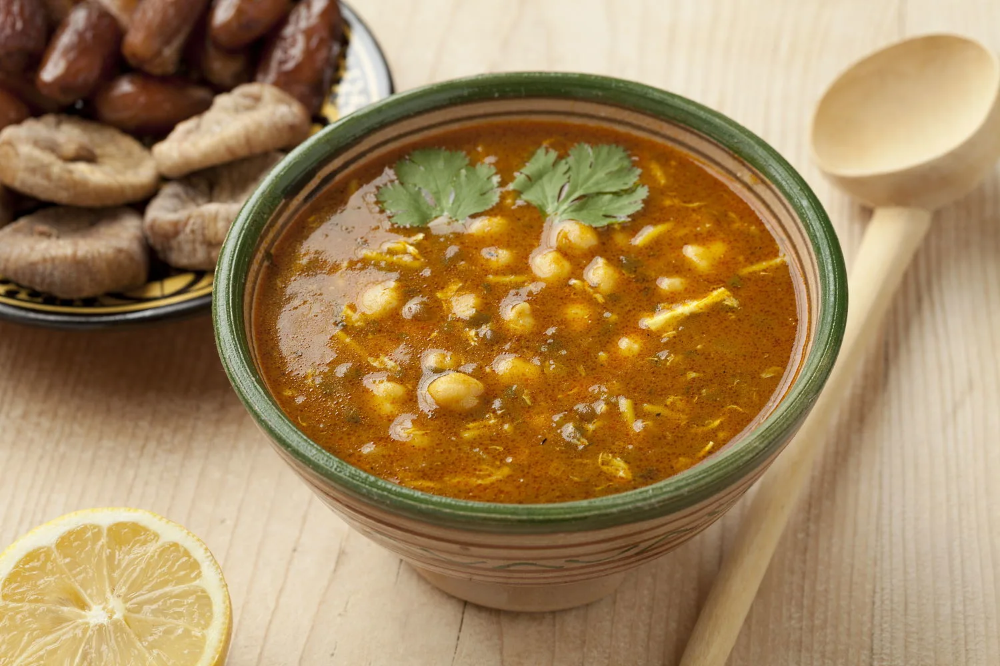

Moroccan Harira (Bean soup)

Description
Harira is a zesty, fragrant tomato-based soup with chickpeas and lentils. Robustly seasoned with ginger, pepper, cinnamon and lots of fresh herbs, it’s especially popular in Ramadan when it’s served to break the fast.
Ingredients
- 6 cups beef stock
- 1 cup dry lentils
- 1 tablespoon olive oil, or to taste
- 1 onion, chopped
- 1 cinnamon stick
- 1 teaspoon minced fresh ginger root
- 1 teaspoon ground turmeric
- 1 teaspoon ground cumin
- 1 teaspoon ground black pepper
- 1 (15 ounce) can garbanzo beans, drained
- 1 (15 ounce) can red kidney beans, rinsed and drained
- 1 (14 ounce) can diced tomatoes
- 1 cup cooked quinoa (Optional)
- 1 bunch flat-leaf parsley leaves and thinner stems, chopped
- 1 bunch cilantro leaves and thinner stems, chopped
- 1 lemon, or to taste, juiced
Directions
Step 1:
- Stir beef stock and lentils together in a large pot; bring to a boil, reduce heat to low, and keep at a simmer while preparing onion.
Step 2:
- Heat olive oil in a skillet over medium heat. Cook and stir onion, cinnamon stick, ginger, turmeric, cumin, and black pepper in the hot oil until the onion is translucent, about 5 minutes; add to stock mixture.
Step 3:
- Pour garbanzo beans, kidney beans, tomatoes, and quinoa into the stock mixture; stir and bring mixture to a boil. Stir parsley and cilantro into the stock mixture; reduce heat to low and cook mixture at a simmer until the lentils are tender, about 45 minutes. Drizzle lemon juice over the soup before serving.
Tips
Cooks's Notes:
To make the soup wholly vegetarian, trade out the beef stock for vegetable stock.
If you do use quinoa, be sure to prepare it separately from the soup (1/2 cup unprepared = 1 cup prepared). Throwing it into the soup unprepared will cause it to absorb all the liquid and you will be left with a very, very thick stew.